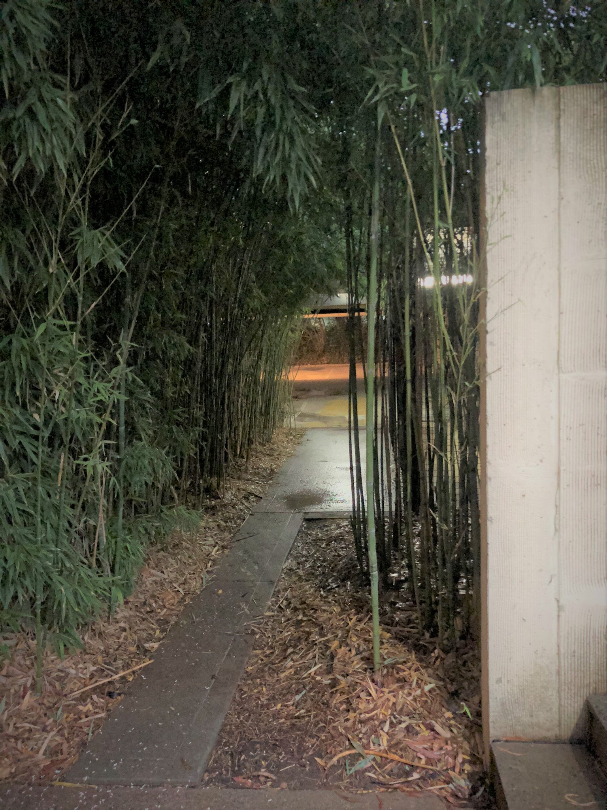

Pool area, carpark and landscaping
The pool area is lower than the surrounding site, and being mostly enclosed by the wings, has the quality of a sunken courtyard. The pool area is reached by a large flight of concrete steps from the west, and features a pond which borders a large, raised central island which is reached from one side by a set of bridging steps. The island has concrete paving, garden beds and silver birch trees, and is the location for a large fibreglass statue of Sir Winston Churchill. The carpark is constructed in off-form concrete, with walls displaying the texture of the timber formwork.

Churchill House has a number of landscape/garden areas. At the front (west) of the building is an open lawn area and either side are mixed native/exotic plantings. The pool area contains numerous trees and shrubs, again of mixed native/exotic species. A small courtyard to the southeast of the main building features bamboo.
